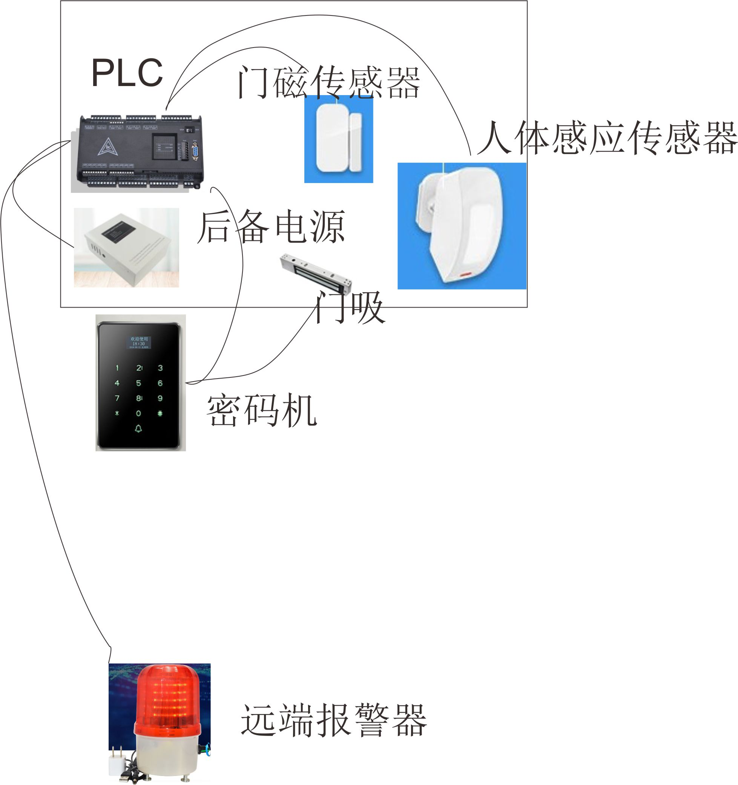

1.密码输入解除报警输出。
2.未输入密码进入报警，现场报警，门卫室报警。
3.
因普通密码锁都没有侵入报警功能，而侵入报警器（一般安装在室内）则没有密码现场解除报警功能，故采用两种装置修改并联合的方案
使用密码考勤机+独立报警器为主体的方案
本方案整体体由密码门禁，考勤记录，磁吸锁，闯门报警，侵入红外报警，及各点报警器。经适应性修改而成。
密码 或 IC卡 或 指纹 开锁。（也可以永久性破坏掉不需要的功能）
磁吸门锁三层保护
报警系统信号取自门禁锁并级联人体感应与开门传感器。
报警器由线路传送信号，一旦未解除情况下开门则报警器鸣叫。
可记录每次开门时间，以方便视频监控系统检查记录。
**停电报警，破坏线路报警（此项必需做适应性修改，做充电电路及脉冲信号电路，使用PLC，并做独立的开门检测联动装置，需2天）

| 设备名 | 数量 | 单价 | 金额 |
|---|---|---|---|
| 密码考勤一体机 | 1 | 800 | 800 |
| 磁吸锁 | 1 | 30 | 30 |
| 红外线感应器 | 1 | 55 | 55 |
| 门磁感应器 | 1 | 34 | 32 |
| 报警器 | 2 | 60 | 120 |
| 信号线 | 1 | 30 | 30 |
| 系统电源 | 1 | 70 | 70 |
| &转接板（停电不工作） | 1 | 60 | 60 |
| *PLC（停电工作） | 1 | 360 | 260 |
| *后备电源（停电工作） | 1 | 290 | 290 |
| 增票 | 1 | 139.76 | 147.92 |
总合计：1996.92 元。注&标号与*标号的设备二选一即可。
工程需时：1天。 (无停电，切线路被切断的报警)